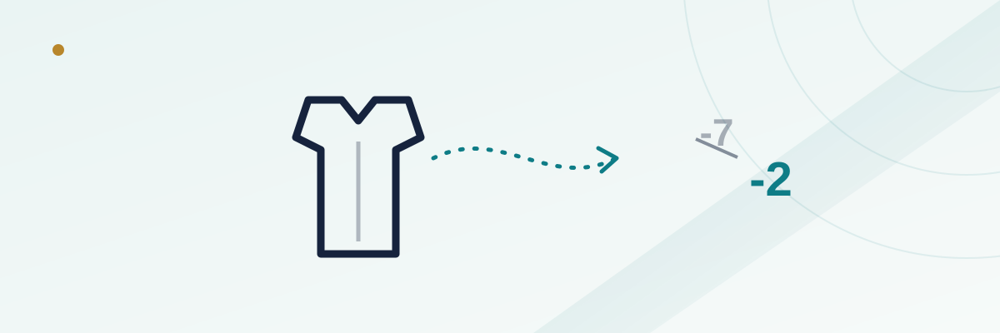

Bowl Game Opt-Outs: How a Thinned-Out Roster Moves the Spread

Every December, a wave of news breaks that has nothing to do with who's favored on paper: a star edge rusher announces he's skipping his team's bowl game to start NFL Draft prep, a star receiver follows a day later, and suddenly a 10-point spread set weeks earlier looks like it was built for a completely different roster. Opt-outs didn't always move markets this much. Now they routinely do, and understanding why requires separating two things that look similar but aren't: a line set on projected rosters, and a line set on who's actually going to suit up.
In this guide
What a bowl opt-out actually is
A bowl opt-out is exactly what it sounds like: a player, usually one with legitimate NFL Draft stock, declares he won't play in his team's upcoming bowl game, even though he's still enrolled and eligible. He isn't injured and isn't suspended — he's making a business decision to stop playing college football a few weeks early rather than risk an injury in a game that has no bearing on a national title or his draft grade. The practice traces back to a handful of early adopters in the mid-2010s and is now common enough that sportsbooks build the possibility into how they treat bowl lines generally, even before any specific names are attached.
Why opt-outs became routine
Three things lined up to make this normal rather than rare. First, the expanded College Football Playoff pulled the sport's biggest games later into January, which made the gap between a mid-tier bowl and actual meaningful football feel enormous for a player with nothing left to prove. Second, the transfer portal gave players an obvious next step — many opt-out decisions are announced in the same breath as a transfer commitment, since a player heading to a new school in the spring has even less reason to risk his body in a bowl for his old one. Third, as NIL money and draft evaluation have both become more sophisticated, the downside of a non-contact drill injury or a freak non-contact tear has gotten more expensive relative to whatever a mid-December exhibition game is worth to a projected Day 2 pick.
The pricing timeline: before vs. after the announcement
Bowl matchups and initial spreads are typically locked in within days of Selection Sunday for the Playoff and the bowl committees' pairings shortly after, which can be two to four weeks before kickoff depending on the bowl's slot on the calendar. At that point, books price the game on full rosters, because that's the best information available. Opt-out news then trickles in over the following days and weeks — sometimes one marquee name at a time, sometimes a cluster of announcements the same week a season officially ends for a team that didn't make a bigger bowl. Each one is a discrete piece of new information, and the market reprices after each, rather than holding a single number from open to kickoff the way a reasonably stable regular-season line might.
Which positions move a line the most
Not every opt-out carries the same weight, and the position matters more than almost any other single factor. A starting quarterback skipping a bowl is close to the ceiling for how much a single absence can move a number, often shifting a line by a touchdown or more on its own, because the backup's full season of game planning, protection calls, and chemistry with receivers simply isn't there. An elite pass rusher or shutdown cornerback is next, since those are low-depth positions where a true drop-off to the next man up is steep and visible on tape. A starting guard or a rotational linebacker opting out barely moves a market at all — the position still matters on the field, but college rosters generally have more usable depth there, and sportsbooks know it.
| Position opting out | Typical depth behind the starter | Rough line impact |
|---|---|---|
| Starting QB | Thin — true drop-off in timing and reads | Largest; often a touchdown or more |
| Elite pass rusher / top CB | Moderate — one clear backup, lesser ceiling | Meaningful; often 2-4 points |
| Featured RB / top WR | Moderate to deep depending on program | Noticeable but often smaller than skill-position reputation suggests |
| Interior OL / rotational LB | Usually deepest position group on roster | Minimal; rarely a standalone line mover |
A worked example
Picture a mid-tier bowl where the higher-seeded team opens as a 7-point favorite at the pairing announcement, based on full-strength rosters for both sides. Four days later, that favorite's starting quarterback and its best cornerback both announce they're preparing for the draft instead. By the time the opponent's coaching staff has finished parsing depth charts and the market has digested the news, that same game might open a fresh number closer to a 1- or 2-point favorite — or even flip to a pick'em — despite literally nothing changing about the on-field talent of the underdog. The team didn't get worse at anything; the favorite simply isn't fielding the roster the original spread assumed. Bettors who bet the opener without accounting for the realistic chance of opt-outs are betting a number that was already stale before the ink dried.
Opt-outs, the portal, and coaching changes all hit at once
What makes bowl season uniquely messy for bettors is that opt-outs rarely happen in isolation. The same three-to-four-week window also includes the transfer portal's main entry period and a wave of head-coaching changes, since athletic directors tend to make coaching moves right after the regular season ends. A team playing in a lower-tier bowl under an interim head coach, missing its top two or three draft-eligible players to opt-outs, and watching several other starters quietly enter the portal before the game is kicked off is not an unusual bowl-season scenario — it's close to the norm outside of the Playoff. Each of those three threads independently nudges a line, and untangling which piece of news actually caused a specific move is part of what makes bowl markets harder to read than a normal November Saturday.
Mistakes bettors make with opt-out news
The most common error is betting the opening bowl line the moment it's released, on the assumption that a spread posted right after the pairing is somehow the "truest" number because it's freshest. In a sport with this much bowl-season roster churn, the opposite is often closer to correct — the number closer to kickoff has absorbed more real information, not less. A second mistake is overreacting to a single skill-position opt-out while ignoring that the opposing team may have just as many absences of its own; the size of a line move should reflect the net talent gap, not just the headline you happened to read first. A third, more subtle mistake is assuming a backup quarterback who's started a few games during the regular season will perform the same in a bowl as he did during the year — bowl prep is compressed, practice reps are different with normal depth-chart disruption, and a backup who looked fine in a midseason spot start isn't guaranteed to look the same here.
Frequently asked questions
Do sportsbooks know about opt-outs before the public does?
Not meaningfully. Opt-out announcements are almost always public — a player statement, an agent tweet, or beat-reporter confirmation — and books react to the same news everyone else sees, typically within hours.
Is it better to bet a bowl game early or wait until closer to kickoff?
There's no universal answer, but waiting at least until most major opt-out windows have passed — typically a week or so before kickoff — means you're betting a number built on a more complete picture of who's actually playing, which many bettors prefer to betting blind on roster assumptions.
Do opt-outs happen in the Playoff semifinals and championship the same way?
Far less often. Players with draft aspirations have much stronger incentive to play in genuinely meaningful, nationally televised Playoff games, so opt-outs cluster heavily in lower-tier and mid-tier bowls rather than in semifinal or title-game matchups.
Does an opt-out affect the total as much as the spread?
Usually less directly, but it can. Losing a starting quarterback or a top offensive weapon often drags a total down along with the spread, since the market expects a backup-led offense to generate fewer points, not just lose by more.